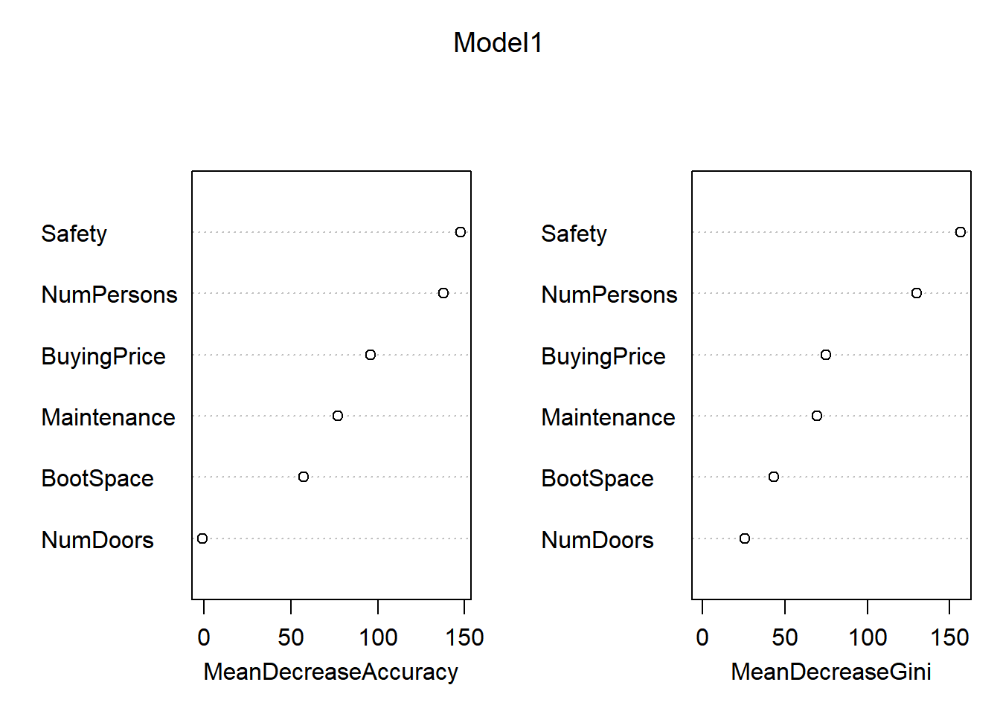
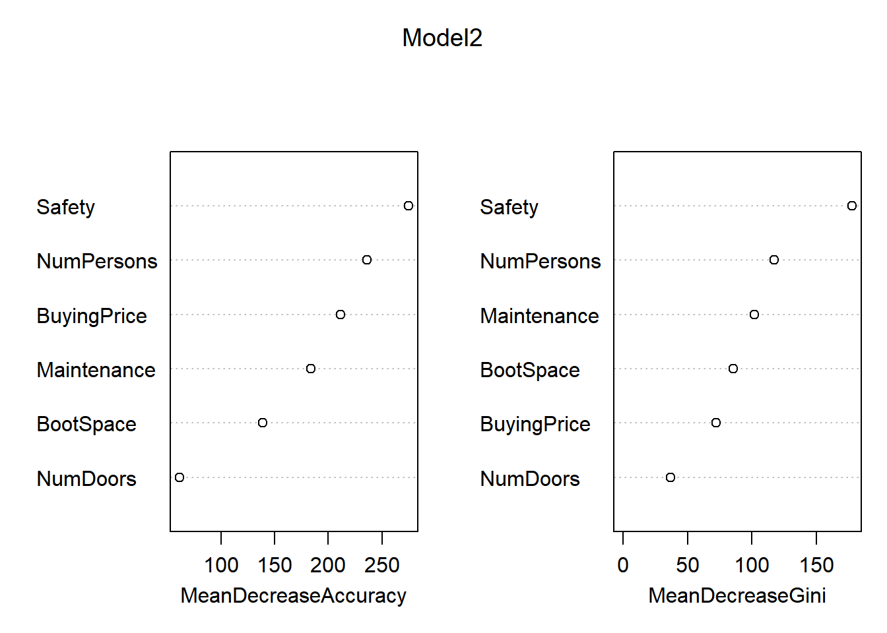

Frontpage Data visualisation Parametizing data Directory structure R-package SQL Zotero Reproductibility Future endeavours Free research (Machine learning) CV Bibliography
The random forest method works via decision tree classification: a model in which information on nodes. The reference forms a giant “tree” consisting of multiple branching paths, connected by nodes. These nodes contain information which of the branches a individual datapoint should go across. Data goes down the tree untill it no longer has any nodes on the tree or information about itself anymore.
This model, while simple, has very low predictive power. Random Forest works on the same principle as decision tree classification, but instead of taking áll datapoints and áll variables, it takes a random selection of them and performs the tree. It then repeats this process for an X amount of times, and finally combines the results of all different decision trees into a single tree. By doing this, it greatly increases its predictive power, and decreases it’s bias.
Now, we’ll perform a randomForest analysis in R. Data has been aquired from an archive of a UCI website (Dua and Graff 2017)
library(randomForest)
#Reading the data
car_data<-read.csv("data.raw/car.data", header=FALSE)First, let’s take a look at the data: according too the metadata-file given with it, the different values mean:
All of these are set up like factors: With levels like vhigh, high, med, low, etc. Because of this, we’ll give them all a appropriate name and transform them into a factor.
colnames(car_data)<-c("BuyingPrice", "Maintenance", "NumDoors", "NumPersons", "BootSpace", "Safety", "Condition")
#Changing "character" data into factor data for all data sets
car_data$BuyingPrice<-factor(car_data$BuyingPrice)
car_data$Maintenance<-factor(car_data$Maintenance)
car_data$NumDoors<-factor(car_data$NumDoors)
car_data$NumPersons<-factor(car_data$NumPersons)
car_data$BootSpace<-factor(car_data$BootSpace)
car_data$Safety<-factor(car_data$Safety)
car_data$Condition<-factor(car_data$Condition)
knitr::kable(summary(car_data))| BuyingPrice | Maintenance | NumDoors | NumPersons | BootSpace | Safety | Condition | |
|---|---|---|---|---|---|---|---|
| high :432 | high :432 | 2 :432 | 2 :576 | big :576 | high:576 | acc : 384 | |
| low :432 | low :432 | 3 :432 | 4 :576 | med :576 | low :576 | good : 69 | |
| med :432 | med :432 | 4 :432 | more:576 | small:576 | med :576 | unacc:1210 | |
| vhigh:432 | vhigh:432 | 5more:432 | NA | NA | NA | vgood: 65 |
According the summary, we can see that Buying price - Safety are all equallty spread, with Condition being the only factor where the 4 different levels have different amounts of expression. Because of this. We’ll use this condition as condition for our machine learning algorythm.
As is usual for machine learning, we’ll split the data into a training-set and a testing-set.
set.seed(100)
partition<-createDataPartition(car_data$Condition, p=0.75, list=FALSE)
car_train<-car_data[partition,]
car_test<-car_data[-partition,]
knitr::kable(summary(car_train))| BuyingPrice | Maintenance | NumDoors | NumPersons | BootSpace | Safety | Condition | |
|---|---|---|---|---|---|---|---|
| high :321 | high :331 | 2 :329 | 2 :431 | big :433 | high:431 | acc :288 | |
| low :326 | low :322 | 3 :328 | 4 :445 | med :435 | low :416 | good : 52 | |
| med :327 | med :326 | 4 :321 | more:421 | small:429 | med :450 | unacc:908 | |
| vhigh:323 | vhigh:318 | 5more:319 | NA | NA | NA | vgood: 49 |
knitr::kable(summary(car_test))| BuyingPrice | Maintenance | NumDoors | NumPersons | BootSpace | Safety | Condition | |
|---|---|---|---|---|---|---|---|
| high :111 | high :101 | 2 :103 | 2 :145 | big :143 | high:145 | acc : 96 | |
| low :106 | low :110 | 3 :104 | 4 :131 | med :141 | low :160 | good : 17 | |
| med :105 | med :106 | 4 :111 | more:155 | small:147 | med :126 | unacc:302 | |
| vhigh:109 | vhigh:114 | 5more:113 | NA | NA | NA | vgood: 16 |
Now, with the training data properly separated, we’ll create a random forest model to determine the “condition” of the car data.
Model1<-randomForest(Condition ~ ., data = car_train, importance = TRUE)
Model1##
## Call:
## randomForest(formula = Condition ~ ., data = car_train, importance = TRUE)
## Type of random forest: classification
## Number of trees: 500
## No. of variables tried at each split: 2
##
## OOB estimate of error rate: 3.55%
## Confusion matrix:
## acc good unacc vgood class.error
## acc 282 1 5 0 0.02083333
## good 7 40 0 5 0.23076923
## unacc 16 2 890 0 0.01982379
## vgood 10 0 0 39 0.20408163predModel1<-predict(Model1, car_test, type="class")
table(predModel1, car_test[,7])##
## predModel1 acc good unacc vgood
## acc 93 2 3 3
## good 0 14 0 0
## unacc 3 0 299 0
## vgood 0 1 0 13It’s as easy as that, we’ve officially created a randomForest learning algorythm in R! However, as with all machine learning algorythms, there’s still much to be tweaked in order to create a optimal algorythm. For example, we can modify the “mtry” and the “ntree”, two important variables in randomForest models.
As said before, randomForest uses the same principle as decision tree classification, only moddified by randomness and repeating the process a whole lot. mtry and ntree change the randomness of the program: “Mtry” determines how many informationpoints are used for every “node” a sample has to go past to continue down the identification tree. “Ntree” determines the amount of samples used for every random decision tree that’s made. By modifying these values in the creation of the model, we can get a different outcome:
Model2<-randomForest(Condition ~ ., data= car_train, ntree = 500, mtry = 6, importance = TRUE)
Model2##
## Call:
## randomForest(formula = Condition ~ ., data = car_train, ntree = 500, mtry = 6, importance = TRUE)
## Type of random forest: classification
## Number of trees: 500
## No. of variables tried at each split: 6
##
## OOB estimate of error rate: 1.93%
## Confusion matrix:
## acc good unacc vgood class.error
## acc 279 2 5 2 0.03125000
## good 2 50 0 0 0.03846154
## unacc 11 2 895 0 0.01431718
## vgood 1 0 0 48 0.02040816predModel2<-predict(Model2, car_test, type="class")
table(predModel2, car_test$Condition)##
## predModel2 acc good unacc vgood
## acc 91 1 1 0
## good 2 16 0 0
## unacc 3 0 301 0
## vgood 0 0 0 16By increasing the mtry to 6 and setting the ntree to 500, we’ve increased the accuracy of our randomForest program. In order to get a detailed breakdown of whether Model 2 is better than Model 1, randomForest has two built-in functions called “importance” and “varImPlot”, which we’ll use on both models. We can also use the previous “confusionMatrix” to determine the accuracy
importance(Model1)## acc good unacc vgood MeanDecreaseAccuracy MeanDecreaseGini
## BuyingPrice 78.399893 40.6308337 62.861221 42.2281098 95.8290633 74.87927
## Maintenance 67.355170 39.8392362 46.336262 22.5572462 77.2186362 69.58717
## NumDoors -2.170164 -0.9618957 1.819644 -0.4356103 -0.9882937 25.74268
## NumPersons 96.826502 28.3889395 124.765116 30.3347994 137.8254416 130.14305
## BootSpace 36.402520 23.6975470 42.442509 29.7169898 57.5485447 43.43290
## Safety 108.208164 43.3309064 131.811220 50.3694061 147.8153155 156.68554importance(Model2)## acc good unacc vgood MeanDecreaseAccuracy MeanDecreaseGini
## BuyingPrice 169.47350 82.88810 111.79003 84.85052 211.20099 72.26247
## Maintenance 143.46414 78.43680 100.59932 50.82836 183.66137 101.94398
## NumDoors 36.84444 23.27634 43.95292 21.77875 60.99641 37.10614
## NumPersons 152.75017 56.42781 202.29261 57.95641 235.81146 117.05621
## BootSpace 89.80659 62.26000 88.13393 62.47436 138.56693 85.70045
## Safety 182.36283 98.65670 193.75459 102.59541 275.01957 177.77858varImpPlot(Model1)
varImpPlot(Model2)
In these plots, the “MeanDecreaseAccuracy” expresses how much accuracy the model loses when it does not consider the given variable, MeanDecreaseGini expresses measures how important that variable is for the homogeneity of the model. The higher the MeanDecreaseAccuracy/Gini, the more important it is for the model. Based on the significantly higher MeanDecreaseAccuracy in model 2 in comparisson to model 1, we can state that model 2 is indeed more accurate than model 1. Furthermore, the confusionMatrix for model 2 gives a higher accuracy than model 1.
confusionMatrix(predModel1, car_test[,7])## Confusion Matrix and Statistics
##
## Reference
## Prediction acc good unacc vgood
## acc 93 2 3 3
## good 0 14 0 0
## unacc 3 0 299 0
## vgood 0 1 0 13
##
## Overall Statistics
##
## Accuracy : 0.9722
## 95% CI : (0.9519, 0.9855)
## No Information Rate : 0.7007
## P-Value [Acc > NIR] : < 2.2e-16
##
## Kappa : 0.9387
##
## Mcnemar's Test P-Value : NA
##
## Statistics by Class:
##
## Class: acc Class: good Class: unacc Class: vgood
## Sensitivity 0.9688 0.82353 0.9901 0.81250
## Specificity 0.9761 1.00000 0.9767 0.99759
## Pos Pred Value 0.9208 1.00000 0.9901 0.92857
## Neg Pred Value 0.9909 0.99281 0.9767 0.99281
## Prevalence 0.2227 0.03944 0.7007 0.03712
## Detection Rate 0.2158 0.03248 0.6937 0.03016
## Detection Prevalence 0.2343 0.03248 0.7007 0.03248
## Balanced Accuracy 0.9724 0.91176 0.9834 0.90505confusionMatrix(predModel2, car_test$Condition)## Confusion Matrix and Statistics
##
## Reference
## Prediction acc good unacc vgood
## acc 91 1 1 0
## good 2 16 0 0
## unacc 3 0 301 0
## vgood 0 0 0 16
##
## Overall Statistics
##
## Accuracy : 0.9838
## 95% CI : (0.9668, 0.9934)
## No Information Rate : 0.7007
## P-Value [Acc > NIR] : < 2.2e-16
##
## Kappa : 0.9643
##
## Mcnemar's Test P-Value : NA
##
## Statistics by Class:
##
## Class: acc Class: good Class: unacc Class: vgood
## Sensitivity 0.9479 0.94118 0.9967 1.00000
## Specificity 0.9940 0.99517 0.9767 1.00000
## Pos Pred Value 0.9785 0.88889 0.9901 1.00000
## Neg Pred Value 0.9852 0.99758 0.9921 1.00000
## Prevalence 0.2227 0.03944 0.7007 0.03712
## Detection Rate 0.2111 0.03712 0.6984 0.03712
## Detection Prevalence 0.2158 0.04176 0.7053 0.03712
## Balanced Accuracy 0.9710 0.96817 0.9867 1.00000This is backed up by the confusion matrix giving model 2 a higher accuracy than model 1
Now we know that a ntree = 500 and a mtry = 6 gives a higher, but what about all other posibilities? It’d be a lot of work to manually test for every single possibility, and determine the one with the highest accuracy.
x=c()
for(i in 1:6){
Model3<-randomForest(Condition ~ ., data= car_train, ntree = 500, mtry = i, importance = TRUE)
PredictModel3<-predict(Model3, car_test, type="class")
x[i]=mean(PredictModel3 == car_test$Condition)
}
data.frame(mtry=1:6,
prediction_power=x)## mtry prediction_power
## 1 1 0.7935035
## 2 2 0.9698376
## 3 3 0.9791183
## 4 4 0.9814385
## 5 5 0.9791183
## 6 6 0.9860789Based on testing mtry’s 1-6 (6 being the maximum, since we only have 6 variables), we can conclude that a mtry = 6 does indeed give us the highest prediction power.
y=c()
range<-seq(from = 100, to = 1500, by = 100)
for(i in seq(from = 100, to = 1500, by = 100)){
Model3<-randomForest(Condition ~ ., data= car_train, ntree = i, mtry = 6, importance = TRUE)
PredictModel3<-predict(Model3, car_test, type="class")
y[i]=(mean(PredictModel3 == car_test$Condition))
}
data<-data.frame(prediction_power=y[range],
ntree=seq(from = 100, to = 1500, by = 100))
data %>% filter(prediction_power==max(y[range]))## prediction_power ntree
## 1 0.9860789 200
## 2 0.9860789 400
## 3 0.9860789 800Based on these results, we can see that 5 different ranges, 200, 400 and 800 all show the exact same (highest) prediction power. Thus, we can conclude in the 100’s range, there is no real big difference between different ntree amounts. Perhaps a logarithmic scale will show more difference?
y=c()
length<-c(1 %o% 10^(0:4))
for(i in c(1 %o% 10^(0:4))){
Model3<-randomForest(Condition ~ ., data= car_train, ntree = i, mtry = 6, importance = TRUE)
PredictModel3<-predict(Model3, car_test, type="class")
y[i]=(mean(PredictModel3 == car_test$Condition))
}
data<-data.frame(prediction_power=y[length],
ntree=length)
data## prediction_power ntree
## 1 0.9651972 1
## 2 0.9791183 10
## 3 0.9837587 100
## 4 0.9837587 1000
## 5 0.9837587 10000With this table, we can see that a ntree=1 has a lower predictive power, however, these differences are still quite small. Even still, they’re handy to keep in mind. Important to keep in mind is that any numbers in a higher power than 1.000 take significantly mote time to render. Thus, it’s the question of all that extra rendering time is worth an (in this case) insignificant difference.
With that, we’ve succesfully performed a randomForest analysis upon a “cars” dataset. Just like with the KNN, we’ll now perform the entire RandomForest workflow with the “Glass” dataset.
Now, we’ll look into a package for R called IDTAXA, which uses randomForest computation to identify bacteria based on their 16sRNA.